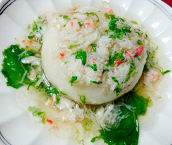

京かぶなのカニあんかけ
- 調理時間：30 分
- （一人当たり）
- カロリー：85kcal
- たんぱく質：6.6g
- 脂質：0.3g
- 炭水化物：14.5g
- 塩分：2.4g


＜2人分＞
- カブ（小）※葉も利用
- 4個
- カニの身
- 60g
- 水溶き片栗粉
- 大さじ1/2
- ・だし汁
- 300ml
- ・薄口しょうゆ
- 大さじ1
- ・みりん
- 大さじ1
- ・塩
- 少々
- ・生姜汁
- 1片分
A


- カブは葉を切り落とし、根の部分は皮を厚めにむく。
カブの葉は、塩少々を加えた熱湯でさっとゆで、冷水でさます。
水気を切ったカブの葉は、1㎝長さにざく切りにする。 - カニは身をほぐしておく。
缶詰の場合は、汁気をきっておく（汁をだし汁にくわえてもおいしい） - 鍋にA、カニの身を入れて火にかける。
煮立ったら、弱火にしてカブの葉を加える。
片栗粉大さじ１/２を同量の水でとき、鍋に回し入れて混ぜ、あんをつくる。 - ①のカブは、蒸気の上がった蒸し器にいれて、蒸気を保ったままで5分程度蒸す。
竹串をさして、中までスッとはいればOk。固ければさらに蒸す。 - やわらかく蒸したカブを器にいれ、あんかけをたっぷりかけて完成。
京かぶなのカニあんかけ
旬のカブは生でも消化吸収がよく、加熱すれば体が温まり、寒くて運動不足になりがちな冬にもってこいの野菜です。
注目したい成分は、アミラーゼという消化酵素。アミラーゼはでんぷんを分解する酵素の総称で、ジアスターゼとも呼ばれます。胃もたれや胸やけを予防して消化吸収を促すため、食欲不振の改善に役立ちます。ビタミンＣも多いので、免疫力を高めて感染症の予防するほか、アンチエイジングにも働きます。